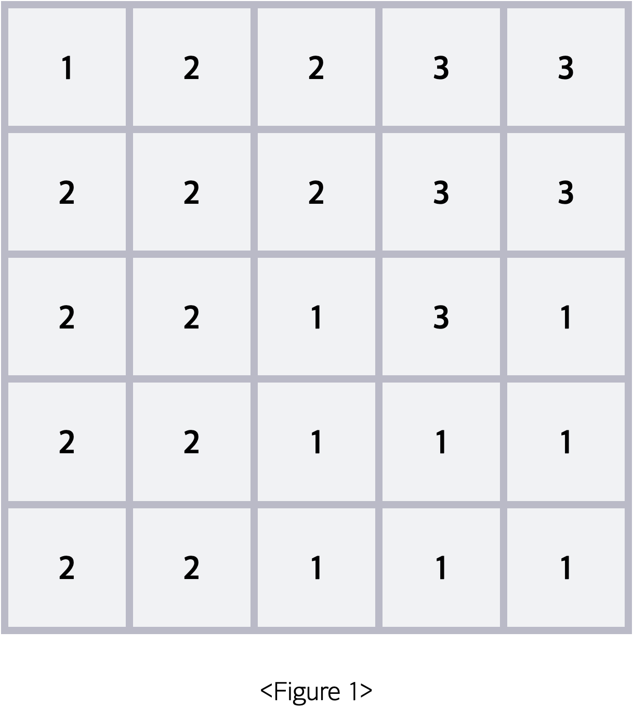
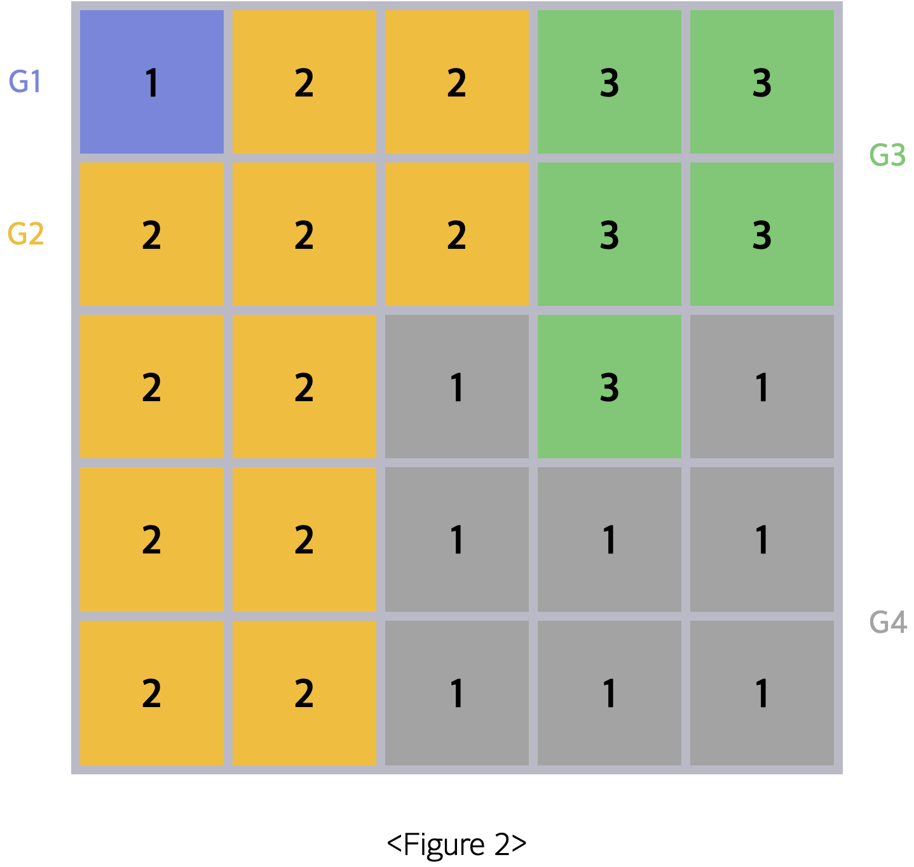
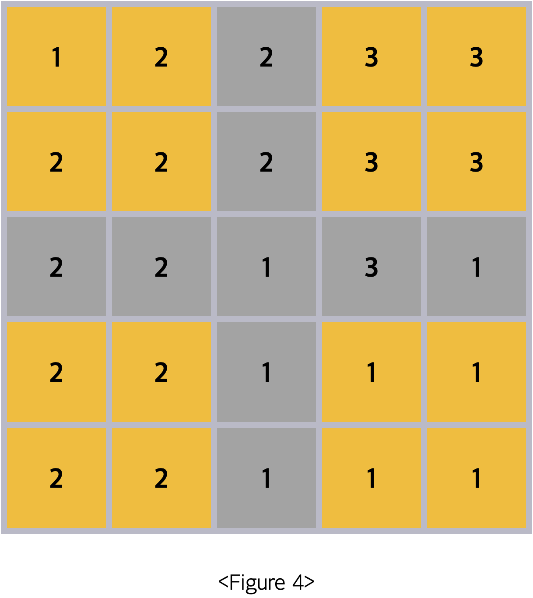
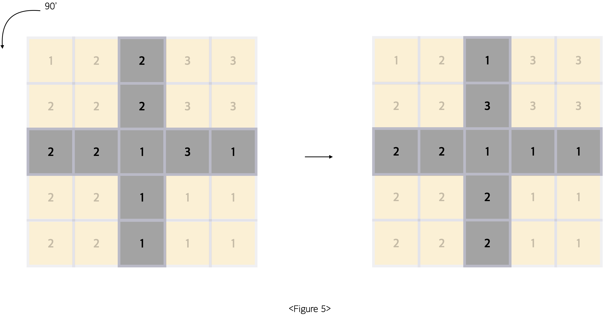
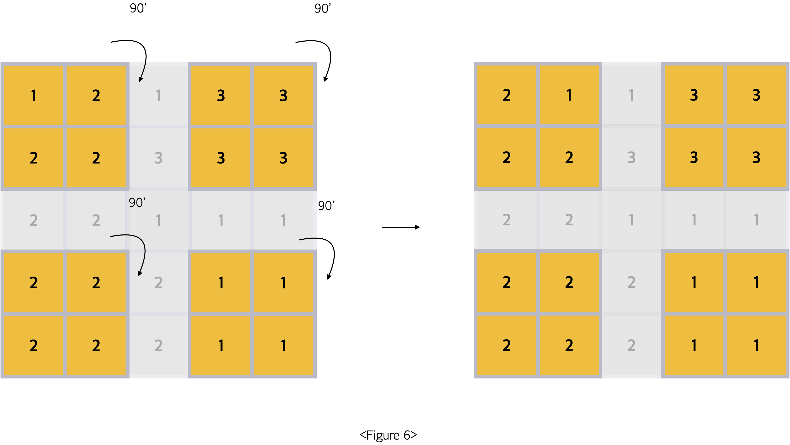

예술가 sam은 그림에 대한 예술성을 평가하는 알고리즘을 만들어 냈습니다.. 그림을 편의상 n * n 크기의 격자로 생각하고, 각 칸의 색깔을 1에서 10 사이의 숫자로 표현하여 이 알고리즘을 적용해보려 합니다.
먼저 이 그림에서 동일한 숫자가 상하좌우로 인접해있는 경우 동일한 그룹이라 본다면, 총 4개의 그룹이 만들어지게 됩니다.
예술 점수는 모든 그룹 쌍의 조화로움의 합으로 정의됩니다.그룹 a와 그룹 b의 조화로움은 (그룹 a에 속한 칸의 수 + 그룹 b에 속한 칸의 수 ) x 그룹 a를 이루고 있는 숫자 값 x 그룹 b를 이루고 있는 숫자 값 x 그룹 a와 그룹 b가 서로 맞닿아 있는 변의 수로 정의 됩니다.
예로 Figure 2 에서 두 그룹 G2, G4의 조화로움은 (11 + 8) x 2 x 1 x 4 = 152가 됩니다.
그룹 쌍 간의 조화로움 값이 0보다 큰 조합인 (G1, G2), (G2, G3), (G2, G4), (G3, G4) 의 조화로움 값을 전부 더하면 48 + 192 + 152 + 156 = 548이 됩니다. 이를 초기 예술 점수라 부르겠습니다.
초기 예술 점수를 구한 뒤에는 그림에 대한 회전을 진행합니다.
회전은 정중을 기준으로 두 선을 그어 만들어지는 십자 모양과 그 외 부분으로 나뉘어 진행됩니다.
- 십자 모양의 경우 통째로 반시계 방향으로 90' 회전합니다. 
- 십자 모양을 제외한 4개의 정사각형은 각각 개별적으로 시계 방향으로 90'씩 회전이 진행됩니다. 
- 두 부분에 대한 회전이 동시에 진행되므로 회전 이후
Figure 4는 다음 모습이 됩니다.
이제 Figure 7의 예술 점수 마찬가지 방법으로 구하면 442점이 됩니다. 이는 1회전 이후 예술 점수가 됩니다.
n * n 크기의 그림 정보가 주어졌을 때, 초기 예술 점수, 1회전 이후 예술 점수, 2회전 이후 예술 점수, 그리고 3회전 이후 예술 점수의 합을 구하는 프로그램을 작성해보세요.
입력 형식
첫 번째 줄에 n이 주어집니다. n은 반드시 홀수입니다.
이후 n개의 줄에 걸쳐 각 행에 칠해져 있는 색깔에 대한 정보인 숫자들이 공백을 사이에 두고 주어집니다.
- 3 ≤ n ≤ 29
- 1 ≤ 주어지는 숫자 ≤ 10
정답 코드 보기
출력 형식
첫 번째 줄에 초기 예술 점수, 1회전 이후 예술 점수, 2회전 이후 예술 점수, 그리고 3회전 이후 예술 점수를 모두 합한 값을 출력합니다.
입출력 예제
예제 1
입력 :
5
1 2 2 3 3
2 2 2 3 3
2 2 1 3 1
2 2 1 1 1
2 2 1 1 1
출력 :
1771
예제 2
입력 :
5
1 2 2 2 2
1 1 1 3 3
1 2 1 3 1
1 1 1 1 1
2 2 1 1 1
출력 :
2374
제한
시간제한 : 1000ms
메모리 제한 : 80MB